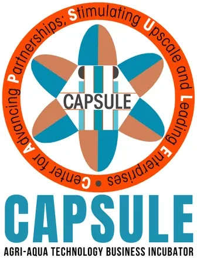

DOST-PCAARRD-CapSU Agriculture & Aquaculture TBI
Capiz State University · Region VI
The DOST-PCAARRD-CapSU Agriculture & Aquaculture TBI — officially known as CAPSULE (Center for Advancing Partnerships, Stimulating Upscale and Leading Enterprises) — is hosted by Capiz State University in Roxas City, Capiz and serves Region VI (Western Visayas). Institutionalized in August 2018 under the DOST-PCAARRD Research, Development and Extension unit, CAPSULE is designed as the university's technology transfer and commercialization support facility for the agriculture and aquaculture sector.
- Category
- Technology Business Incubator
- Host institution
- Capiz State University
- City
- Roxas City, Capiz
- Region
- Region VI
- Operating status
- Operating
About the Center
CAPSULE advances partnerships and stimulates enterprise upscaling by nurturing an innovative ecosystem where academe, industry, and partner stakeholders converge. As part of the DOST-PCAARRD RAISE (Regional Agri-Aqua Innovation System Enhancement) Program, CAPSULE functions as the regional hub for agri-aqua technology incubation, IP management, and enterprise development in Western Visayas.
Since inception, CAPSULE has achieved standout impact: it has supported 407 incubatees, created 1,711 jobs, generated a total of ₱118.7 million in incubatee enterprise income, nurtured 255 technologies, and generated ₱12 million in technology licensing revenue — establishing CAPSULE as one of the highest-performing agri-aqua TBIs in the national network.
Programs & Services
- Regional Agri-Aqua Technology Business Incubation — Structured incubation for startups and MSMEs in agriculture, aquaculture, food processing, and natural resources using PCAARRD-backed technologies
- Regional IP & Technology Business Management (IP-TBM) — Intellectual property management, technology valuation, patent filing, and technology licensing facilitation for regional innovations and research outputs
- IP-Centric Agribusiness Hub — A dedicated program bridging innovation and entrepreneurship by connecting IP-protected technologies to commercial agribusiness adopters across Region VI
- Business Model & Pitching Development — Training on business model canvas development, branding, promotional materials design, and investor pitch preparation for active incubatees
- Making Knowledge Accessible — Dissemination of agriculture, aquaculture, and natural resources technologies and research findings to benefit MSMEs and communities across the region
- Technology Licensing & Transfer — Formal licensing agreements connecting CapSU and PCAARRD research outputs to agri-aqua enterprises in Western Visayas
- Scaling & Investor Linkage — Access to PCAARRD grants, DOST startup programs, and investor networks to help incubatee businesses scale and compete nationally and internationally
Contact
Sources & references
- capsu.edu.ph/atbi
- ipmo.capsu.edu.ph/capsu-tbis
- region6.dost.gov.ph/2023/04/25/tech-biz-incubator-links-capiz-startups-to-f…
Details are drawn from public records and the sources above, July 2026.
Startupreneur Innovation Hub · synced from the Notion catalog (July 2026) · status: published.